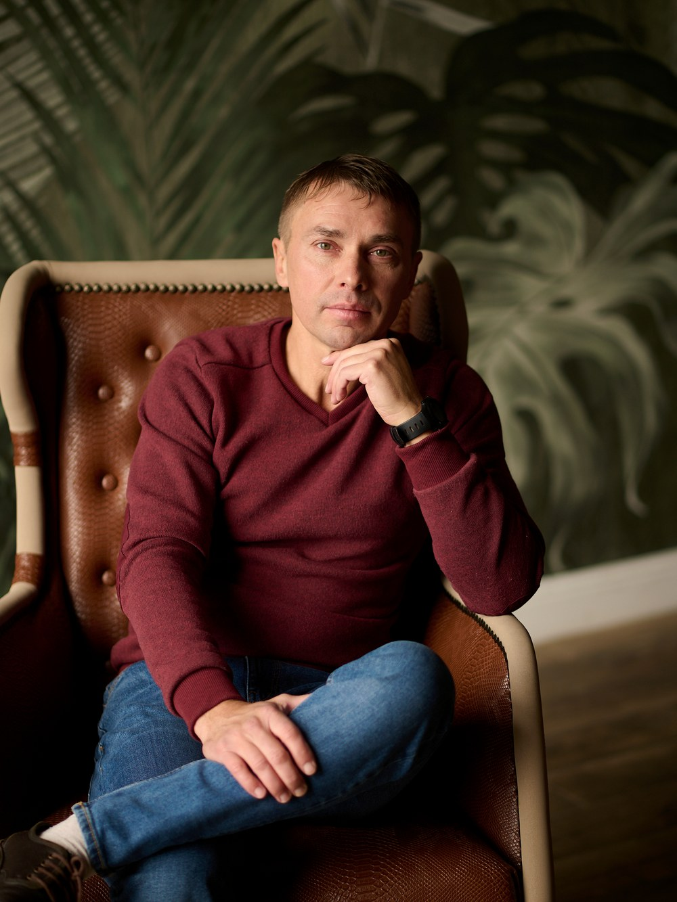

Ты не
поломан
Как признать свою боль,
принять себя и обрести свободу
Александр Исаев

Книга Александра Исаева
Ты не
поломан
Как признать свою боль, принять себя и обрести свободу
Книга о том, как за каждой «поломкой» прячется забытая сила — и как перестать носить маску, чтобы жить своей жизнью.
О чём эта книга →Для кого эта книга
Вы узнаете себя, если
О чём книга
Карта, по которой можно вернуться к себе
Книга собирает в одну систему то, что обычно разбросано по десяткам подходов. Пять опор, на которых держится вся работа:
{{ c.desc }}
Как читать эту книгу
Два пути — выберите свой
{{ h.title }}
{{ h.desc }}
Это не роман. Это рабочая тетрадь. Читайте неделями или месяцами — книга подождёт.
Шесть масок
Найдите свою — и снимите её
«Маска — не твой враг. Она появилась не для того, чтобы разрушить тебя, а для того, чтобы когда-то помочь тебе выжить.»
{{ m.name }}
{{ m.pain }}
{{ m.desc }}
{{ m.age }}
Отрывок
Фрагмент из книги
ОТРЫВОК: реальная глава будет вставлена сюда — читается прямо на странице, в книжной типографике.
Что вы сделаете руками
Практики, а не только чтение
Оглавление
Тридцать четыре главы
Разбиты на условные разделы для навигации. Нажмите на раздел, чтобы раскрыть главы.
В дополнение
34 главы · более 470 000 знаков · практики, самодиагностика и рабочие таблицы
Отзывы читателей
Что скажут те, кто прочитает

Об авторе
Александр Исаев
Психолог, пятнадцать лет практики. Работает в гештальт-подходе, гипнотерапии, телесно-ориентированной и йога-терапии. Автор метода «Древо жизни».
Эта книга выросла из живой работы с людьми — из тысяч разговоров, в которых человек постепенно узнавал себя настоящего.
Статус издания
Книга готовится к выходу. Дата публикации, формат и способ получить экземпляр — уточняются. Следите за анонсами в Telegram.
Ты не поломан — ты просто забыл свою силу.
Книга — один из путей к себе. Другой начинается с разговора.